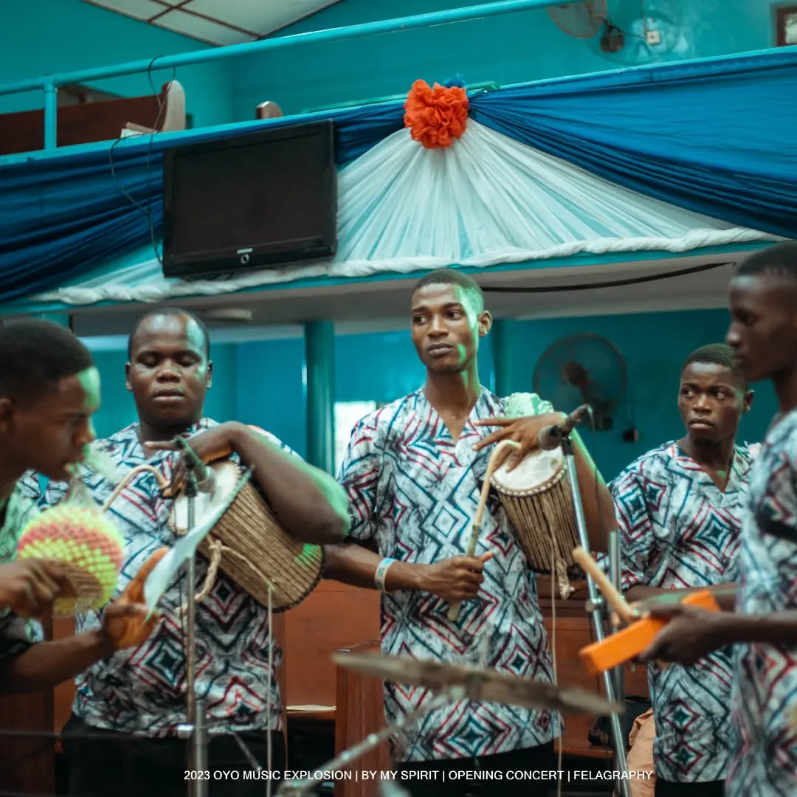
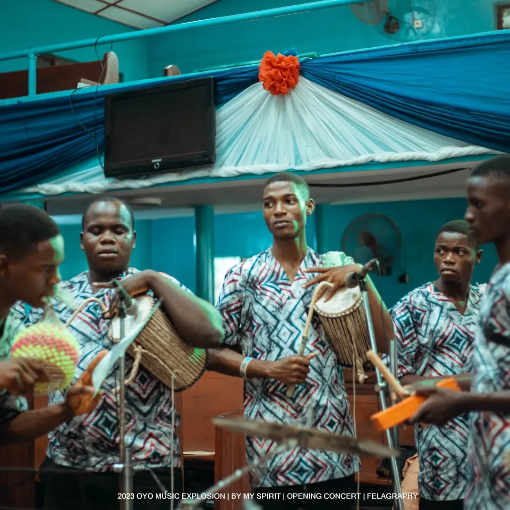
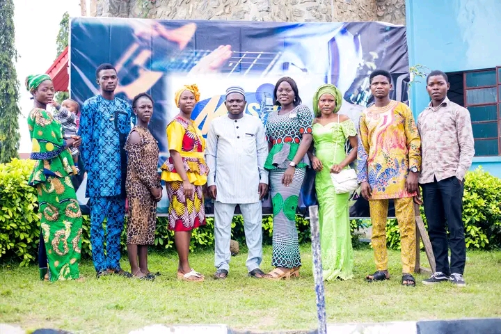
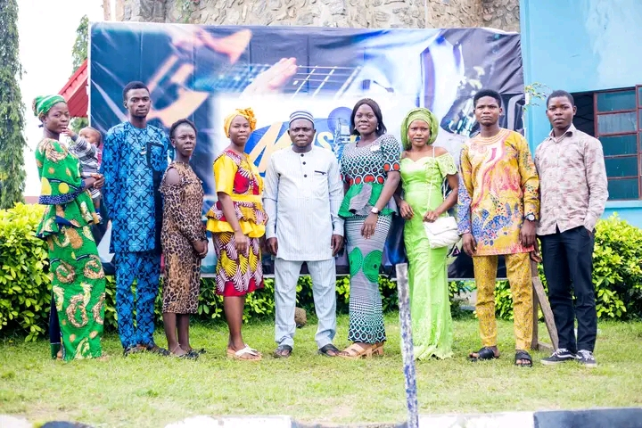

THE MUSIC EXPLOSION
…partake, perfect, perform
…partake, perfect, perform

The 2024 Oyo Music Explosion was themed "Consecration," inspired by Colossians 1:16b, emphasizing that all things were created by and for God. Participants and instructors were reminded that every skill and virtue shared during the event is ultimately for the Lord. The message highlighted the need to offer these gifts back to God in purity and dedication. Just as God accepted Abel’s offering because his person was accepted first, the impact of our ministry depends on the consecration of our hearts. Gratitude was expressed to the many leaders, family members, and supporters whose contributions made the event a success. Special appreciation went to Revd Philip Bukola Oyewale and other church leaders, along with heartfelt thanks to family members for their unwavering support.
- Chairman, Ajibade Sunday Adebowale
Becoming a great music or worship leader requires a heart devoted to God and a love for people, recognizing that leadership is a service. True leaders guide the choir and congregation toward sincere worship, cultivating humility, strong biblical knowledge, organizational ability, clear communication, and musical skill. Leaders must continually develop themselves and their teams while remaining teachable and available for God’s use. Above all, they trust God for their reward rather than seeking human praise.
- Revd Dr. Femi Oyedokun, Music Pastor, IBC OYO
The 2024 Oyo Music Explosion was themed "Consecration," inspired by Colossians 1:16b, emphasizing that all things were created by and for God. Participants and instructors were reminded that every skill and virtue shared during the event is ultimately for the Lord. The message highlighted the need to offer these gifts back to God in purity and dedication. Just as God accepted Abel’s offering because his person was accepted first, the impact of our ministry depends on the consecration of our hearts. Gratitude was expressed to the many leaders, family members, and supporters whose contributions made the event a success. Special appreciation went to Revd Philip Bukola Oyewale and other church leaders, along with heartfelt thanks to family members for their unwavering support.
- Chairman, Ajibade Sunday Adebowale
Becoming a great music or worship leader requires a heart devoted to God and a love for people, recognizing that leadership is a service. True leaders guide the choir and congregation toward sincere worship, cultivating humility, strong biblical knowledge, organizational ability, clear communication, and musical skill. Leaders must continually develop themselves and their teams while remaining teachable and available for God’s use. Above all, they trust God for their reward rather than seeking human praise.
- Revd Dr. Femi Oyedokun, Music Pastor, IBC OYO
 


The welcome address emphasizes the importance of unity, cooperation, and togetherness in achieving success, drawing from biblical examples such as Jesus involving others in creation to highlight the power of collective effort. Just as musical instruments blend beautifully when played in harmony, the Music Ministry thrives on unity of purpose to fulfill spiritual assignments pleasing to God. Participants of the 2022 Music Explosion Workshop and Concert are encouraged to embrace a teachable spirit, build meaningful relationships, and allow the Holy Spirit to guide them throughout the program and beyond. Appreciation is extended to all supporters, committee members, church leaders, and ministry teams whose dedication has sustained this vision, with prayers that their efforts will be richly rewarded. The event theme, "Partake to Perfect and Perform," urges participants to apply what they learn for God’s glory.
- Chairman, Ajibade Sunday Adebowale
The message highlights that music, especially in Christian worship, is far more than sound, harmony, or style; it is centered on Jesus Christ, who is the true source of every good music. Music is a multifaceted discipline— scientific, mathematical, historical, and artistic—but above all, it is a spiritual art that brings humanity closer to God. In the church, music plays a vital role in expressing awe, worship, and unity among believers, pointing hearts toward God rather than self. Congregational singing unites all generations in shared worship and reflects the theology of the church. Praise through music invites God’s presence, opens doors of blessing, and brings comfort, joy, and strength amidst life’s uncertainties. Believers are encouraged to sing joyfully, knowing that music remains a constant source of hope and connection to the divine.
- Revd Dr. Femi Oyedokun, Music Pastor, IBC OYO


 

All glory is given to God for the opportunity to gather again for the 13th edition of the Oyo Music Explosion Music Workshop and Concert after a pause due to the COVID-19 outbreak. This year’s theme, “A Pure Heart” from Matthew 5:1-16, reminds Christians to cultivate hearts free from sin, hatred, and unforgiveness, and instead filled with love, purity, and joy, reflecting God’s light to the world. Participants are encouraged to walk in God's ways and fulfill His expectations. The Chairman, Ajibade Sunday, expresses gratitude to the leadership and members of Immanuel Baptist Church, all ministers, music leaders, instructors, churches, and participants for their consistent support, praying that their labor in God’s vineyard will be richly rewarded. Special thanks are also extended to his family and the organizing committee for their unwavering support, as he warmly welcomes everyone to this year’s event, praying they leave blessed and empowered for greater service.
- Chairman, Ajibade Sunday Adebowale
Music is a vital part of Christian worship, created by God as a gift to humanity for fellowship, edification, and, most importantly, as a means of offering praise to Him. Christian music, which includes church music, sacred music, and gospel music, plays a key role in worship and evangelism, expressing biblical truths and drawing believers closer to God. Church music refers to music used in liturgical services, sacred music includes psalms and hymns often practiced in orthodox churches, and gospel music conveys the message of salvation and hope rooted in scripture. Music in worship fulfills God’s command to sing, creates a unique connection between believers and God beyond spoken words, teaches the gospel, and allows believers to express their love for God with their whole being. It unites worshippers, reinforces faith, and enriches the act of worship through various expressions and postures. Ultimately, sacred music is a divine tool that transforms hearts and helps believers worship God sincerely and joyfully, encouraging them to find musical expressions that stir their hearts toward true worship.
- Revd Dr. Femi Oyedokun, Music Pastor, IBC OYO


SINGLE VOICE: I was glad when they said unto me
RESPONSE: Let us go into the house of the Lord
CALL: O come! O come!
RESPONSE: O come!
Let us serve the Lord
O come!
Let us serve the Lord
With all the gladness
With all the joy
And the fullness of our hearts
O come! O come
O come let's serve the Lord
O come let's serve the Lord
SINGLE VOICE: E fayo sin Oluwa
Eyin eniyan gbogbo
Aanu Oluwa ko nipekun
Titi ayeraye